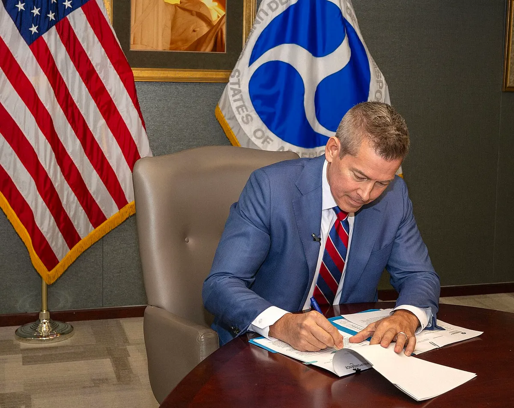
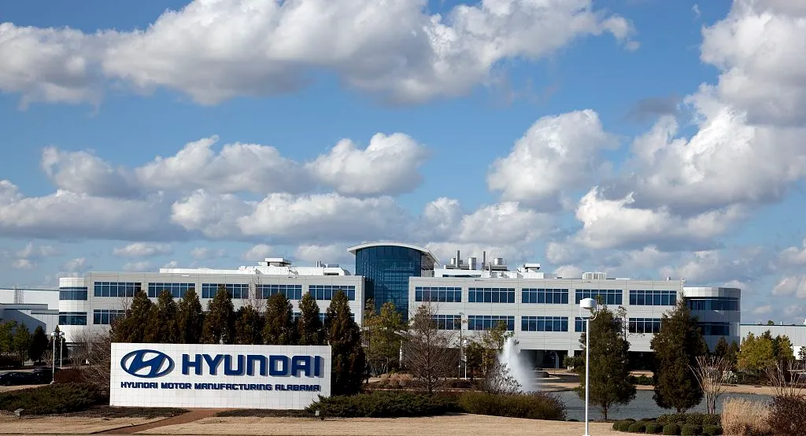
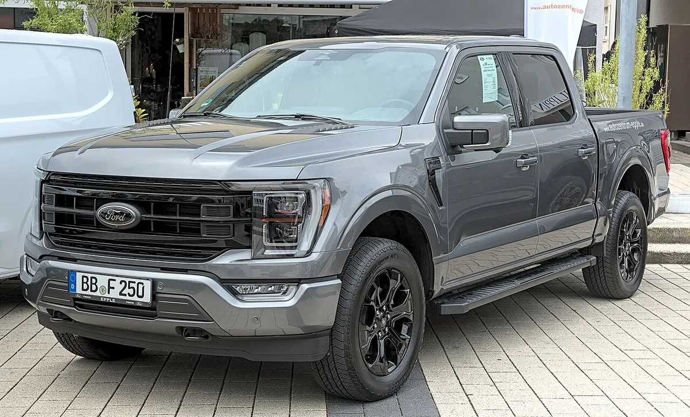
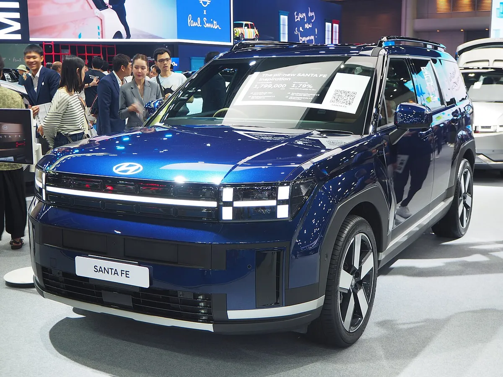
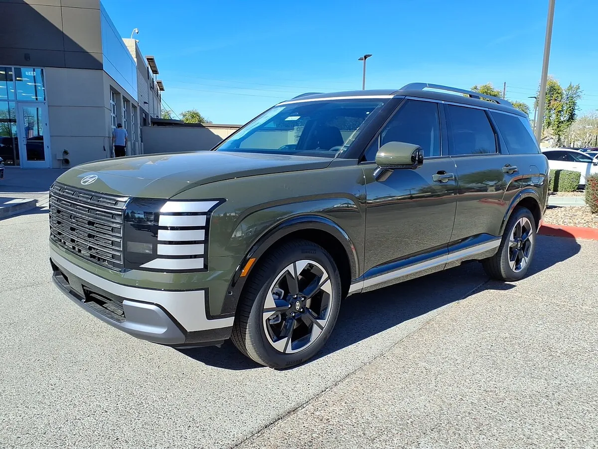
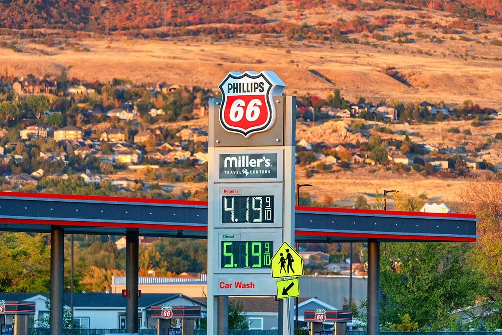
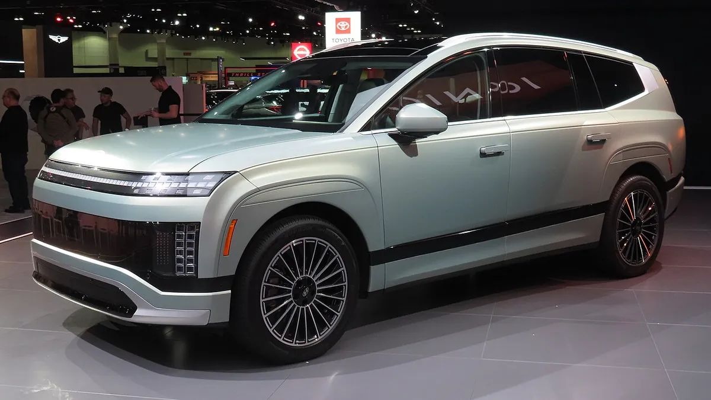

▲ 2025년 연료 효율 기준 완화 지침 문서에 서명하는 숀 더피 미국 교통부 장관(자료 사진, 이번 최종 규칙 서명 장면이 아님) ⓒ U.S. Department of Transportation / Wikimedia Commons (Public Domain)
"규제 하나 풀었더니 82조 원이 굳는다." 미국 교통부(USDOT)와 도로교통안전국(NHTSA)이 내놓은 새 연비 규제 최종안에 따라 완성차 업계가 2031년까지 아끼게 될 기술 개발 비용이 606억 달러(약 82조 원)로 추산됐다. 오토헤럴드와 뉴스핌은 이 분석을 인용해 이같이 전했다.
카프리즘은 앞서 "전기차 덜 팔아도 된다"… 트럼프, 바이든표 연비규제 뒤집었다에서 이번 CAFE(기업평균연비) 완화의 배경을 다뤘다. 이번 기사는 '누가 얼마를 아끼나'에 초점을 맞춰 회사별 절감액과 숫자를 읽을 때 조심해야 할 점을 정리했다.
1. 무엇이 확정됐나 — 50.4마일에서 34.9마일로
CarBuzz와 국내 매체들에 따르면 미 교통부는 조 바이든 행정부 시절 도입된 갤런당 50.4마일(약 21.4km/L) 목표를 34.9마일(약 14.7km/L)로 낮추는 방안을 확정했다. 2024년 신차 평균 연비 실적이 약 30.1마일이었다는 점을 감안하면, 새 기준은 현재 수준에서 크게 멀지 않은 목표다. 이 규칙은 'Freedom Means Affordable Cars(자유는 저렴한 자동차)'라는 이름으로 소개됐고, 적용 대상은 2022~2031년형이다.
| 항목 | 바이든 시절 기준 | 완화 최종안 |
|---|---|---|
| 2031년 평균 연비 목표 | 갤런당 약 50.4마일 | 갤런당 약 34.9마일 (승용·경트럭 합산) |
| 참고: 2024년 실적 | 약 30.1마일 (CarBuzz) | |
| 연간 개선율 | — | 승용 연 0.90%(2029년형까지)→1%, 비승용 연 0.51%→1% (DieselNet) |
| 차급 분류 | 경트럭 약 70% : 승용 약 30% | 2030년형부터 승용 약 70% : 경트럭 약 30%로 재설정 (DieselNet) |
| 크레딧 거래 | 허용 | 2028년형부터 폐지 (DieselNet) |
| 시행 | 뉴스핌은 12월 초 시행이라고 전함, Roll Call은 실질 영향이 2028년형부터라고 설명 | |
📍 서명일이 25일이라는 보도는?
DieselNet·HNGN·Roll Call은 교통부가 9월 28일 최종 규칙을 공개했다고 전했다. 일부 검색 자료에서는 조너선 모리슨 NHTSA 청장이 9월 25일 서명했다는 내용이 확인되는데, '서명(25일)'과 '공개(28일)'가 다른 날짜일 가능성이 크지만 연방관보 공식 문서는 이번 취재에서 직접 확인하지 못했다. 이 기사는 공개 시점인 9월 28일을 기준으로 쓴다.

▲ 현대차의 미국 앨라배마 공장(HMMA) 정문. 현대차그룹은 미국 현지 생산과 하이브리드로 규제 변화에 대응하고 있다 ⓒ Carol M. Highsmith / Wikimedia Commons (Public Domain)
2. 어떻게 '비용'이 줄어드나 — 재분류와 크레딧 폐지, 과징금 0
이번 완화의 실체는 세 가지 장치의 조합이다. 첫째, 차급 재분류다. CarBuzz에 따르면 소형 크로스오버 등 현재 '경트럭'으로 분류되는 차를 다시 분류해 기준을 손보는 방식이며, 교통부는 이 결과 평균 신차 가격이 약 1,300달러 낮아진다고 주장한다.
둘째, 크레딧 거래 폐지다. 그동안 연비가 좋은 차를 많이 파는 회사가 크레딧을 팔고, 기준에 못 미치는 회사가 이를 사서 규제를 맞출 수 있었다. GM은 앞서 실적 발표에서 규제 완화로 5억~7억 5,000만 달러의 이익 효과를 예상한다며 "주된 이유는 컴플라이언스 크레딧을 더 사지 않아도 되기 때문"이라고 밝힌 바 있다.
셋째, 과징금은 이미 0달러였다. HNGN·Roll Call은 의회가 2025년 7월 예산법으로 CAFE 미달 과징금을 0으로 낮췄다고 전했다. 뉴스핌은 GM이 과거 연비 미달 과징금으로 1억 2,720만 달러를 낸 적이 있고, 바이든 시절 강화 기준(2032년 기준)에서는 업계 과징금이 약 140억 달러로 예상됐다고 전했다. 오토헤럴드는 같은 140억 달러를 '2023년 제안된 규제안'의 예상치로 서술해 표현이 다르다.

▲ 포드 F-150. 픽업트럭은 미국 연비 규제에서 ‘경트럭’ 기준의 적용을 받는 대표 차급이다(자료 사진) ⓒ Alexander Migl / Wikimedia Commons (CC BY-SA 4.0)
✅ '절감액'의 의미
· 606억 달러 등은 2031년까지 규제를 맞추기 위해 들어갈 기술 비용의 감소분을 정부(NHTSA) 분석에서 추산한 값
· 과징금이 이미 0이었으므로 '과징금 회피'보다 배출·연비 저감 기술 투자와 크레딧 구매를 안 해도 되는 효과가 핵심
· 회사가 실제로 그만큼 이익을 늘린다는 뜻이 아니며, 절감분이 가격 인하로 이어질지도 별개 문제
3. 누가 얼마나 아끼나 — 회사별 절감 추산
오토헤럴드와 뉴스핌이 인용한 분석에 따르면 가장 큰 수혜자는 GM이다. 뉴스핌은 GM이 바이든 시절 기준에서는 규제 대응 비용이 317억 달러로 예상됐다고 전했다. 완성차 6개사만 합쳐도 약 467억 달러로, 업계 전체 606억 달러의 상당 부분을 차지한다.
| 회사 | 절감액(달러) | 원화 환산 |
|---|---|---|
| GM | 204억 달러 | 약 27조 7,032억 원 |
| 스텔란티스 | 66억 달러 | 약 8조 9,628억 원 |
| 포드 | 58억 달러 | 약 7조 8,764억 원 |
| 현대차그룹 | 53억 달러 | 약 7조 1,974억 원 |
| 토요타 | 45억 달러 | 약 6조 1,110억 원 |
| 혼다 | 41억 달러 | 약 5조 5,678억 원 |
| 업계 전체 | 606억 달러 | 약 82조 원 (대당 약 1,289달러) |
다만 이 회사별 수치는 오토헤럴드·뉴스핌 등 국내 보도를 통해 확인되는 것이며, NHTSA가 공개한 규제영향분석(RIA) 원문의 표는 이번 취재에서 직접 대조하지 못했다. 원화 환산액도 언론이 적용한 환율(달러당 약 1,358원 안팎)에 따른 것이다.
4. 현대차그룹의 7조 원 — 하이브리드·EREV 승부수
NHTSA 분석에서 현대차그룹은 2031년까지 기술 비용 53억 달러(약 7조 1,974억 원)를 아낄 것으로 추산됐다. 이투데이는 이번 조치를 두고 "현대차그룹 미국 전동화 전략 급반전"이라고 진단했고, 아시아경제는 "숨통 트인 현대차 하이브리드·EREV 승부수"라고 짚었다. 규제 압박이 줄어든 만큼 순수 전기차 일변도가 아니라 하이브리드와 주행거리 연장형 전기차(EREV)를 병행하는 다층 전략이 힘을 받는다는 해석이다.

▲ 현대 싼타페. 하이브리드·EREV 라인업 확대가 현대차그룹의 미국 전략 키워드로 거론된다 ⓒ Chanokchon / Wikimedia Commons (CC BY-SA 4.0)

▲ 미국 시장용 2026년형 현대 팰리세이드 하이브리드 리미티드(자료 사진). 대형 SUV의 하이브리드화가 진행 중이다 ⓒ HJUdall / Wikimedia Commons (CC0)
✅ 현대차그룹 관점에서 정리하면
· 절감액 53억 달러는 규제를 맞추기 위해 들었을 기술 비용의 감소분(추산)이지 영업이익이 아님
· 순수 EV 판매 비중을 급히 높이지 않아도 되어 하이브리드·EREV 등 현실적 라인업 운용 여지 확대
· 다만 미국 정책은 정권에 따라 크게 바뀌어 왔으므로, 현대차그룹이 "유연성"을 강조하는 이유와도 맞닿음
· 규제 완화가 소비자의 실제 구매 선택(연료비·전기차 수요)까지 바꾸는지는 별개의 문제
5. 반론 — 1,380억 달러와 1,300달러를 어떻게 읽나
더피 장관은 이번 규칙이 신차 가격을 평균 1,300달러 낮추고 향후 5년간 미국 소비자에게 1,380억 달러를 절감해 준다고 주장했다(CBS·Yahoo 등 보도). 다만 이 1,380억 달러에는 연료비가 포함되지 않았다는 지적이 있다. 즉 '차값'은 내려가더라도 연비가 나빠지면 주유비가 늘어나는 효과는 계산에 들어가 있지 않다는 것이다.

▲ 미국의 주유소 유가 표지판(자료 사진). 연비 규제 완화의 실제 효과는 앞으로의 유가에 크게 좌우된다 ⓒ Tony Webster / Wikimedia Commons (CC BY 2.0)
| 주체 | 주장 | 출처 |
|---|---|---|
| 미 교통부·더피 장관 | 신차 가격 평균 1,300달러 인하, 5년간 1,380억 달러 절감, "선택권 회복" | CBS·Yahoo·CarBuzz |
| 미국 자동차혁신연합(완성차 협회) | "적절한 방향 수정", 시장 현실에 맞춘 기준 | ABC·Roll Call |
| NRDC | 운전자가 차량 수명 동안 연료비 약 1,400달러를 더 부담, "법 위반" | CarBuzz |
| 시에라클럽·청정교통 단체 | "주유소에서 더 쓰고 공기는 더 나빠진다", 소송 시사 | ABC·HNGN |
| 경제학자(Yahoo 인용) | 제조 원가가 줄어도 가격 하락으로 이어진다는 보장 없음, 브렌트유가 108달러를 넘는 상황에서 정부 전망은 낮은 유가를 가정 | Yahoo News |
📍 표기상 주의
NRDC의 1,400달러는 CarBuzz 보도를 통한 것이고, 환경보호기금(EDF)이 제시한 연료비 수치는 산정 기준이 매체마다 달리 소개돼 이 기사에서는 인용하지 않았다. 더피 장관의 1,380억 달러도 교통부 측 주장이며 독립 검증된 수치가 아니다.

▲ 아이오닉 9. 전동화를 이어가면서도 하이브리드를 병행하는 다층 전략이 현대차그룹의 방향으로 소개된다 ⓒ HJUdall / Wikimedia Commons (CC0)
6. 앞으로의 변수
✅ 지켜볼 포인트
· 소송 가능성 — 환경단체가 "법 위반"을 주장하고 소송을 시사한 만큼 법정 다툼으로 이어질 수 있는지
· 2030년형 분류 재설정의 실제 영향 — 재분류가 연비 부담을 어떻게 바꾸는지
· 유가 — 브렌트유 급등 국면에서 소비자가 연비 나쁜 차를 실제로 더 살지
· 정권 교체 리스크 — 이번 기준이 또다시 뒤집힐 수 있는 정책 변동성
· 현대차그룹의 라인업 조정 — 하이브리드·EREV 확대와 전기차 투자 속도의 균형
7. 요약
미 교통부는 2031년 평균 연비 목표를 갤런당 50.4마일에서 34.9마일로 낮춘 최종안을 공개했고, 업계 전체 기술 비용은 2031년까지 606억 달러(약 82조 원) 줄어들 것으로 추산됐다. 대당 절감액은 약 1,289달러다.
회사별로는 GM 204억 달러가 가장 크고, 현대차그룹은 53억 달러(약 7조 1,974억 원)로 네 번째다. 다만 이 숫자는 규제 대응 기술 비용의 추산치일 뿐 순이익이 아니며, 과징금은 이미 0이었고 크레딧 거래는 폐지된다.
1,380억 달러 절감 주장에는 연료비가 빠져 있다는 지적이 있고, 환경단체는 소송을 시사했다. 현대차그룹은 하이브리드·EREV를 앞세운 유연한 대응이 관건이 될 전망이다.